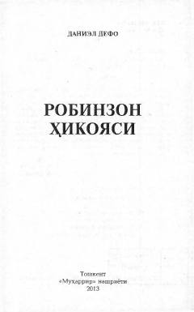

РҲDaniel Defoning mashhur sarguzasht romanining XX asr boshidagi ilk o'zbekcha tarjimasi.
Mazkur kitob mashhur ingliz adibi Daniel Defoning «Robinzon Kruzoning hayoti va ajoyib sarguzashtlari» romanining XX asr boshida Fozilbek Otabek o'g'li tomonidan qisqartirilib o'zbek tiliga qilingan ilk tarjimasidir. Asarda insonning yolg'iz yashayolmasligi, ijtimoiy muhit va axloqiy qarashlarga doir muhim hayotiy masalalar qalamga olingan. Nashrga tayyorlovchi Bahodir Karimov tomonidan zamonaviy o'zbek tiliga moslashtirilgan.